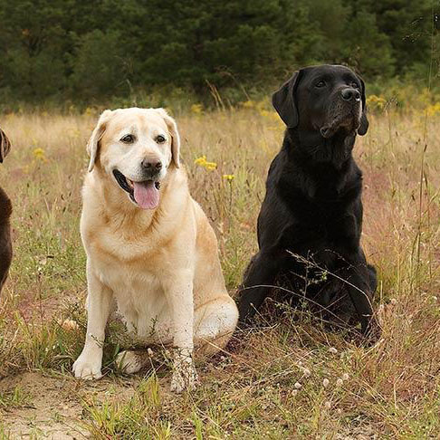

Phải có lý do mà Labrador Retriever liên tục ở vị trí đầu bảng là giống chó phổ biến nhất của AKC: chúng là những chú chó dễ gần, thân thiện và linh hoạt. Những chú chó này hòa hợp với tất cả mọi người ( đặc biệt là nếu có thêm một quả bóng tennis ở đó) và thường không hung hãn với con người và những động vật khác.
Labrador là giống chó sở hữu thân hình cân đối, khỏe mạnh. Chúng có bộ lông màu từ vàng kem đến vàng nâu (màu đỏ không được công nhận). Bộ lông được cấu tạo bởi lớp lông không thấm nước bên ngoài và một lớp lông mịn dày bên trong. Chúng có cái đầu to, mõm hơi vát nhưng kèm với bộ hàm rộng và rất khỏe cùng với hàm răng sắc bén. Mũi có màu đen, mắt biểu cảm màu nâu với viền sẫm. Đôi tai cỡ nhỡ, cụp. Cổ dài, khỏe và khá cơ bắp. Ngực rộng. Đuôi dài và không bao giờ cong.
